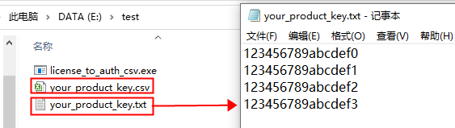
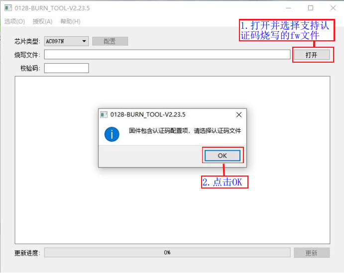
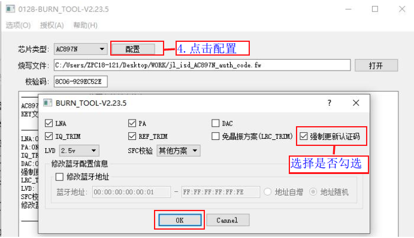
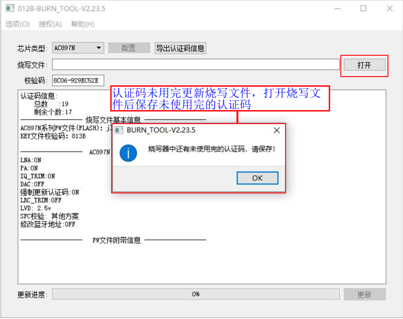

1.8. Programming Third-Party Data (Authentication Codes)
1.8.1. Use case
When SDK development requires third-party data, such as authentication codes (serial numbers, triples), the third-party data can be programmed into a specified location of the target chip at the same time as the target chip firmware, so that the SDK can use the third-party data programmed into the chip.
1.8.2. Preparing authentication code data
1.8.2.1. Preparing the data to be programmed
As shown in Authentication code data editing format, edit the authentication code data needed by the SDK in Notepad, one line per authentication code (each chip is programmed with only 1 authentication code, i.e. the SDK can only obtain one of the lines). After editing the data, change the extension of the your_product_key.txt file, or save it as your_product_key.csv.

Authentication code data editing format
1.8.2.1.1. Converting the format of the data to be programmed
The data to be programmed must be converted to a format that the programmer can recognize before it can be programmed into the target chip.
Put the .csv file containing the authentication code data to be converted and the conversion tool license_to_auth_csv.exe (click here to download) in the same directory;
Press "Windows + R" on the keyboard, enter cmd and open the command-line window;
For example, if the files are stored in E:\test, go to that directory and run
license_to_auth_csv.exe your_product_key.csv; this generates the data fileJL_your_product_key.csv, which the programmer can recognize, as shown in Authentication code data format conversion and Authentication code data format after conversion.

Authentication code data format conversion

Authentication code data format after conversion
Note
By default, the content of each line in a .csv file is written as text. If the content of each line is binary data in hex form, you can change the .csv file extension to .hex, so that the data is written in binary form during programming.
For example, for the following line in a .csv file
112233
When it is written as text, "112233" is written: 6 bytes in total, namely '1', '1', '2', '2', '3', '3'.
For the following line in a .hex file
112233
It is written in binary form:"\x11\x22\x33" is written, 3 bytes in total, namely 0x11, 0x22, 0x33.
1.8.3. Authentication code data programming procedure
1.8.3.1. Creating a fw file that supports authentication code programming
Authentication codes can only be programmed if the corresponding fw programming file supports it. The steps for creating a fw file that supports authentication code programming are shown in Creating a fw file that supports authentication code programming:
Open the
isd_config.inifile in the download directory of the SDK project;Add the
AUTH_CODE=1;configuration item to the [SYS_CFG_PARAM] section of theisd_config.inifile, then save the file;Double-click the
download.batscript in the download directory to run it;This regenerates the
jl_isd.fwfile with support for authentication code programming.
Important
The isd_config.ini file in the SDK may be generated by a preprocessing tool. So if you modify isd_config.ini directly and then click Build (instead of double-clicking download.bat), your changes may be overwritten by a new isd_config.ini file generated by the preprocessing tool.
Some SDKs may generate isd_config.ini by preprocessing isd_config_rule.c. If you find that your modified isd_config.ini is reverted after you build the SDK, check whether this is the cause. If so, modify isd_config_rule.c directly.

Creating a fw file that supports authentication code programming
Note
The data of one authentication code cannot exceed 128 bytes; authentication code data smaller than 128 bytes is stored at the end of the flash, and the SDK provides an interface for retrieving the programmed data;
To program authentication code data longer than 128 bytes, specify the flash programming address (it can also be set to AUTO to assign the address automatically) and the storage length in the isd_config.ini file in the SDK download directory; the SDK reads the data from the configured address.
The programmer currently supports programming at most 4K of authentication code data to a specified or automatically generated flash address. To program larger authentication code data, contact Jieli technical support!
To program authentication code data longer than 128 bytes, add the following configuration to the isd_config.ini file in the SDK download directory:
[BURNER_PASSTHROUGH_CFG]
AUTH_CODE_ADDR = $(TEST1_ADR);
[RESERVED_CONFIG]
TEST1_ADR=AUTO;
TEST1_LEN=4K;
TEST1_OPT=1;
1.8.3.2. Updating the fw programming file and the authentication code file to the programmer
Connect the PC and the programmer with a USB cable. After the programmer enters "PC mode" (PC模式), open the "programming firmware update" control panel on the PC (if you are not sure how to open it, see the "Deploying the target chip firmware to the programmer" section). The steps are as follows:
Open and select the fw file that supports authentication code programming, as shown in Opening and selecting a fw file that supports authentication code programming;
Click OK (if you click Cancel, only the fw file is updated to the programmer);
After clicking OK, select and open the authentication code data file, as shown in Opening and selecting the authentication code data file;
Click "Configure" (配置), choose whether to check "Force update authentication code" (强制更新认证码) and click OK (if it is checked, any authentication code already programmed into the chip is overwritten; to avoid waste, it is normally left unchecked), as shown in Choosing whether to check force update
Click "Update" (更新). After successful deployment, an update success message appears and the authentication code information is displayed, as shown in Deploying the fw file and authentication code file to the programmer
After deployment is complete, power-cycle the programmer;
Note
When firmware is reprogrammed, different options determine whether the authentication code is erased:
Authentication code file selected? |
"Force update authentication code" (强制更新认证码) checked? |
Behavior |
|---|---|---|
Authentication code file selected |
Unchecked |
Keeps the authentication code already in the chip (if any) |
Authentication code file selected |
Force update checked |
Always overwrites the authentication code |
Not selected |
Unchecked |
Erases the authentication code already in the chip |
Important
If no authentication-code-related options are displayed in the deployment window, make sure that a fw file is selected and check whether the currently selected fw file specifies that authentication codes are to be programmed. For details, see the previous section, Creating a fw file that supports authentication code programming

Opening and selecting a fw file that supports authentication code programming
Important
If no authentication-code-related options are displayed in the deployment window, make sure that a fw file is selected and check whether the currently selected fw file specifies that authentication codes are to be programmed. For details, see the previous section, Creating a fw file that supports authentication code programming

Opening and selecting the authentication code data file

Choosing whether to check force update
Important
If no authentication-code-related options are displayed in the deployment window, check whether the currently selected fw file specifies that authentication codes are to be programmed. For details, see the previous section, Creating a fw file that supports authentication code programming

Deploying the fw file and authentication code file to the programmer
1.8.3.3. Programming authentication code data into the chip
Authentication codes are programmed in increasing order of the available entries in the authentication code data file; that is, authentication codes are unique, and each chip is programmed with a different authentication code.
The programmer programs the authentication code data into the target chip at the same time as the chip firmware, so the programming procedure is the same as for a single fw file.
1.8.4. Exporting authentication codes
1.8.4.1. Exporting to view the authentication code programming status
Connect the PC and the programmer with a USB cable. After the programmer enters "PC mode" (PC模式), open the "programming firmware update" control panel on the PC. Export the authentication code information and save it to the specified location, as shown in Exporting authentication code information.

Exporting authentication code information
Open the exported authentication code file. As shown in Authentication code usage, an authentication code that has been used is marked "TRUE" in the corresponding position.

Authentication code usage
1.8.4.2. Exporting when updating the programming file
If you update the programming file before all authentication codes have been used, a prompt tells you that there are unused authentication codes, so that they are not lost. As shown in Exporting authentication codes when updating the programming file and Exporting authentication codes to a specified location, after you click the OK button, a dialog box asks you to save the authentication code file. Save the authentication code file for later use (if you do not save it, the programming file cannot be updated).

Exporting authentication codes when updating the programming file

Exporting authentication codes to a specified location
1.8.5. Notes
Authentication code data must be imported as a csv file. The maximum length of an authentication code should not exceed 128 bytes.
When importing authentication codes into each programmer, import a reasonable number of them, and update the programming file only after all the authentication codes have been programmed.
If you really need to change the programming file before all authentication codes have been programmed, manage the exported authentication code file yourself. When you later need to program the authentication codes that were not yet programmed, carefully check the imported authentication code file to avoid programming codes twice or losing codes.
The way authentication codes are accessed in the SDK may differ slightly between SDKs. For details, ask the person who provided the SDK.